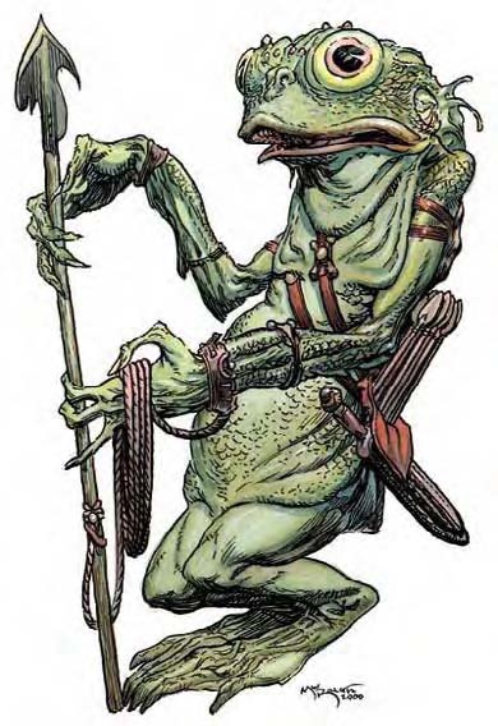

| 资料栏位 | 寇涛鱼人 (Kuo-Toa) 中型人形怪物 (水生) |
| 生命骰 | 2d8+2 (11HP) |
| 先攻 | +0 |
| 速度 | 20英尺 (4格)、游泳50英尺 |
| 防御等级 | 16 (+6天生) 或18 (+6天生、+2重型木盾)、接触10、措手不及16或18 |
| 基本攻击/擒抱 | +2 / +3 |
| 攻击 | 短矛+3近战 (1d6+1)；或啮咬+3近战 (1d4+1) |
| 全力攻击 | 短矛+3近战 (1d6+1) 及啮咬-2近战 (1d4) |
| 占据/触及 | 5英尺 / 5英尺 |
| 特殊攻击 | 闪电矛、钳杖 |
| 特殊能力 | 黏液、两栖、对毒素与麻痹免疫、视觉异常灵敏、光照目盲、电击抗力10、潜行 |
| 豁免 | 强韧+3、反射+3、意志+5 |
| 属性 | 力量13、敏捷10、体质13、智力13、感知14、魅力8 |
| 技能 | 手艺或知识 (任一) +4、脱逃+8、聆听+7、潜行+3、搜索+8、侦察+11、游泳+9 |
| 专长 | 警觉B、强韧加强 |
| 环境 | 温带水域 |
| 组织 | 巡逻队 (2-4，加上1个3级鞭牧)、中队 (6-11，加上1-2个3级鞭牧，1-2个4级督僧以及1个8级战士)、一团 (20-50，加上100%非战斗人员、2个3级鞭牧、2个8级战士与1个10级战士) 或一族 (40-400，加上每20个成年寇涛鱼人1个3级鞭牧、1个4级督僧、4个8级战士、1个10级鞭牧与2个10级战士) |
| 挑战级数 | 2 |
| 宝藏 | 标准 |
| 阵营 | 通常中立邪恶 |
| 进化 | 视人物职业而定 |
| 等级修正值 | +3 |
这种人形生物比人类稍矮。圆滚滚的身体覆有细小的鳞片，外观看起来有些肥胖浮肿。他们的手脚细瘦纤细，末端则是宽大的掌蹼、后肢末端则呈鳍状肢。子弹型的头部长着一对凸出的黑色眼睛，宽阔的大嘴里长满利齿。
寇涛鱼人属于古老水生人形生物的一支，以其邪恶凶暴的天性闻名。
虽然大部分种族都拒绝与这种恶心生物来往，但总是根本无法避开他们。寇涛鱼人认识许多关于栖息在海洋最深处、被遗忘的古老邪恶生物。
一般寇涛鱼人身高约5英尺，体重大约160磅。
虽然一般情况下寇涛鱼人是银灰色的，但他们的体色会随情绪改变。愤怒的寇涛鱼人呈深红色，而害怕时则呈苍白的灰色或白色。寇涛鱼人周围总有一股腐败的腥味。
寇涛鱼人通晓寇涛语、地底通用语与水族语。
战斗寇涛鱼人的战术与武器因不同个体的训练与技能而异。一群寇涛鱼人战士通常会编队作战，且在近战前先朝敌人扔掷短矛。
闪电矛 (超自然)：寇涛鱼人牧师 (又称鞭牧) 每1d4轮可产生一道闪电，寇涛鱼人必须两个以上，手掌才能发出闪电，但准备时只需相距不超过30英尺即可。该闪电束可造成寇涛鱼人数目×1d6点电击伤害，通过反射检定 (DC=13+鞭牧数量) 则伤害减半。
钳杖：许多寇涛鱼人战士，以及所有7级以上的寇涛鱼人鞭牧都携带这种大型奇特武器。钳杖可造成1d10点敲击伤害，强击范围为掷骰原20，致命伤害为普通伤害的双倍。钳杖的可触距离为10英尺，不能攻击邻近敌人。若以钳杖击中小型以上、大型以下的生物则尝试擒抱，此为即时动作，且不会引发借机攻击。若持用者的擒抱检定成功代表钳杖抓住目标，只要维持住，每轮可造成1d10点伤害。
黏液 (特异)：寇涛鱼人使用自己的体液与其他材料混合，涂在盾上让他拥有捕蝇纸般的黏性，可以黏住接触到的生物或物品。对寇涛鱼人的近战攻击检定失败时必须做一次反射检定 (DC=14)，失败则攻击者的武器会被黏在盾上而脱手，使用天生武器者成为被黏状态。寇涛鱼人必须花上一小时以及价值20金币的材料才能涂好一面黏胶盾，若没有黏到任何物品或生物则黏性最多可以维持三天 (若曾黏到东西则无法再黏住任何物品)。通过力量检定 (DC=20) 方可拉开被黏住的武器或肢体。
两栖 (特异)：虽然寇涛鱼人用鳃呼吸，但也可以在陆上呼吸。
视觉异常灵敏 (特异)：寇涛鱼人的两只眼睛可以各自聚焦，因此拥有绝佳的视力。其视觉灵敏可以看到移动中的隐形或灵体生物，唯有维持完全静止不动才有可能不被他们看到。
光照目盲 (特异)：突然曝露在强光下 (例如阳光或“昼明术”) 会寇涛鱼人目盲一轮。若仍停留在强光下，则后续每轮都会陷入目眩。
潜行 (特异)：寇涛鱼人体表分泌的油膜使他们难以被擒抱或套住。魔法或非魔法的网子都无法捉住寇涛鱼人，其他形态的绊锁也大多会被摆脱。
技能：寇涛鱼人在进行“脱逃”检定时具有+8种族加值。进行“侦察”与“搜索”检定时具有+4种族加值。寇涛鱼人在进行任何特殊动作或闪身避祸时，“游泳”检定具有+8种族加值。即使分心或受困，他们在进行“游泳”检定时都可以随时取10。若以直线前进，则可在游泳时进行奔跑动作。
寇涛鱼人栖息于地底，那里有足够的水池以供栖息繁衍。他们的繁殖方式与鱼类相同，在特定水池里养育子代，直到他们发展出两栖特性为止 (大约在孵化后一年)。
由于鞭牧的努力布教，几乎所有寇涛鱼人都崇敬女神波莉朵芙，他们又称为海洋之母虔诚信徒。每个寇涛鱼人部落至少有一个海洋之母的祭坛。较大的部落则设有主神庙作为小聚落的集散地，同时也是社群间贸易与政治的中枢。大部分的寇涛鱼人社会会接受黑暗精灵与其仆役，因为他们能提供有用的货品或服务，但寇涛鱼人依旧惧怕并仇视着黑暗精灵。这样的对立关系造成两个种族间经常发生小冲突与绑架事件。
寇涛鱼人的人物寇涛鱼人适合的职业是游荡者。寇涛鱼人领导者多为牧师兼游荡者或牧师 (鞭牧)。寇涛鱼人牧师信仰波莉朵芙普，可由下列领域择二：破坏、邪恶或水。寇涛鱼人中也有武僧，称为巡僧。